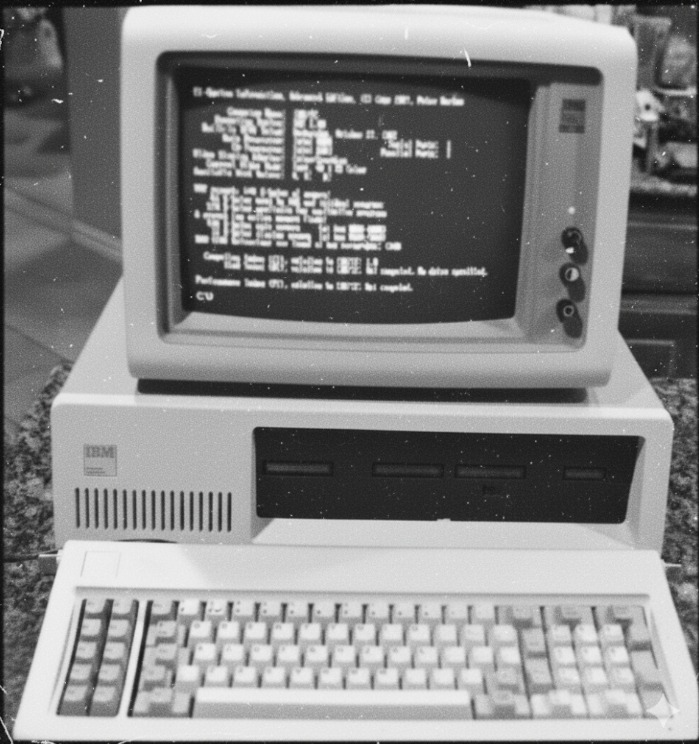

Origem do Software
- O surgimento do software veio da demanda por automatizar cálculos e processos nos primeiros computadores;
- Engenheiros e cientistas, como Alan Turing e John von Neumann, criaram conceitos e rotinas que formaram a base do software moderno;
- Em 1957, John Tukey cunhou o termo para diferenciar programas e rotinas do hardware físico.
Software
- Programas básicos como sistemas operacionais, tradutores e rotinas de arquivos;
- Surgimento de editores de texto, planilhas, programas gráficos e jogos;
- De gratuito a produto comercializado, originando a indústria de software.
Sistema Operacional
- O IBM System/360 introduziu a ideia de rodar o mesmo software em diferentes máquinas da mesma linha;
- Foi a primeira vez que o software pôde ser independente do hardware, permitindo maior flexibilidade;
- As organizações puderam expandir seus sistemas sem precisar reescrever programas inteiros, reduzindo custos e tempo.

Linguagem de Programação
- O FORTRAN-II focava em cálculos científicos e engenharia, enquanto o COBOL atendia negócios e bancos, ambos compatíveis com o IBM System/360;
- O BASIC foi criado para ensino e uso simples em computadores, já o ALGOL-68 trouxe maior rigor matemático e estrutura formal para a programação;
- Desenvolvido para ensino de programação estruturada, destacou-se pela clareza, organização e forte influência em linguagens posteriores.
Crise do Software
- Grande necessidade de softwares impulsionada pelo avanço tecnológico, por conta que as empresas buscavam soluções digitais para automatizar processos;
- Os programas eram complexos e a produtividade dos desenvolvedores era baixa, dificultando a entrega de sistemas eficientes dentro dos prazos;
- Foi criado para suprir a necessidade do mercado, permitindo maior eficiência e melhor organização no desenvolvimento de software.